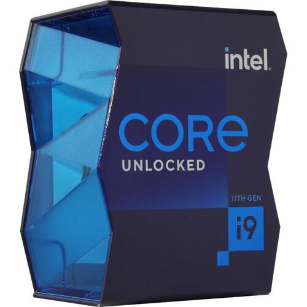

| 
|
Процессор Intel Core i9-11900K BOX |
| Цена: 39 999 руб. | |
|
Характеристики
| |
|
Описание Процессор Intel Core i9-11900K – чип со сбалансированной производительностью. Можно использовать его для создания различных сборок. При изготовлении применялся технологический процесс 14 нм. Он позволяет добиться небольшого потребления энергии и тепловыделения. Процессор выполнен с применением архитектуры Rocket Lake. Она позволила поднять производительность в сравнении с чипами прошлого поколения. Используется восемь ядер и шестнадцать потоков для обработки информации. | |